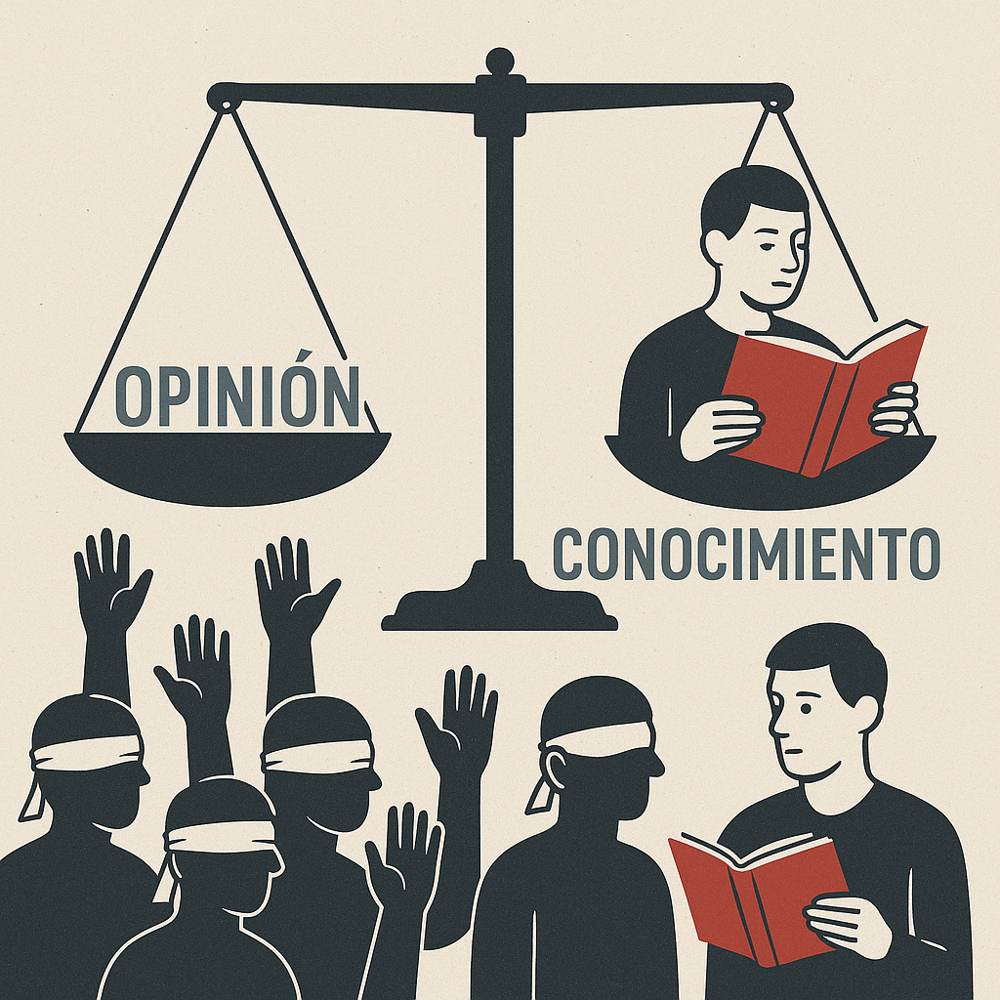

Epistocracia vs. Democracia: ¿Es Justo que Todos Decidan sin Saber?
 03 de mayo, 2025
03 de mayo, 2025
Los problemas de la democracia actual

A360
En teoría, la democracia es el sistema político más justo: cada ciudadano tiene una voz, un voto, una oportunidad de incidir en las decisiones colectivas. Pero en la práctica, esa igualdad formal ha comenzado a mostrar grietas cada vez más visibles. La pregunta que muchos evitan hacer, pero que flota en el aire, es incómoda: ¿qué pasa cuando una gran parte del electorado no está preparada para tomar decisiones políticas informadas?
Hoy vivimos en la era de la hiperconectividad, donde todos tenemos acceso a más datos que nunca antes. Sin embargo, la abundancia de información no garantiza la sabiduría, ni siquiera el buen juicio. Las redes sociales han convertido la opinión en moneda de cambio, pero también han empoderado voces sin criterio, ni formación, ni voluntad de diálogo. ¿Es eso democrático? ¿O es una distorsión de lo que la democracia debería ser?
El voto se ha vaciado de contenido racional y se ha llenado de pasiones, lealtades tribales, consignas virales y fake news. Se vota por rabia, por identidad, por tradición o por memes. Se elige a líderes que apelan más al estómago que al cerebro, y muchas veces lo que termina premiándose no es el mérito ni la coherencia, sino la capacidad de manipular emociones.
Este fenómeno no es nuevo — Tocqueville, Mill o incluso los griegos clásicos ya lo veían venir —, pero se ha intensificado por el debilitamiento de la educación cívica, el desprestigio del conocimiento y la banalización del discurso político. El resultado es una democracia que funciona procedimentalmente, pero falla cognitivamente. Y cuando las decisiones colectivas están basadas en ignorancia, el daño no es sólo simbólico: puede ser económico, social, ecológico e incluso irreversible.
La epistocracia: ¿una solución o una amenaza?
A360
Frente a este panorama surge una propuesta provocadora: la epistocracia, o el gobierno de los que saben. Filósofos como Jason Brennan han sido sus principales defensores. Su tesis es simple, pero potente: si no dejaríamos a alguien sin experiencia realizar una cirugía o pilotar un avión, ¿por qué deberíamos permitir que personas sin conocimiento voten sobre políticas públicas complejas?
Brennan sugiere formas epistocráticas moderadas, como restringir el voto a quienes no pasen un test de conocimiento básico, o dar más peso a los votos de los más informados. Aunque estas ideas suenan escandalosas, parten de una premisa realista: el ideal democrático de “un ciudadano, un voto” asume un nivel de madurez, racionalidad e información que hoy está en entredicho.
En este punto aparece la frase que puede herir sensibilidades, pero que merece ser enfrentada sin hipocresía: “la opinión de un experto no debe ser tratada de la misma forma que la opinión de un inepto.”
No se trata de elitismo, sino de responsabilidad. No todas las opiniones tienen el mismo valor epistémico. Reconocer eso no es antidemocrático: es sensato. Pero, claro, aquí es donde la epistocracia tropieza con su propio límite: ¿quién define quién es un "experto"? ¿Cómo evitar que esta meritocracia del saber se transforme en una nueva oligarquía?
Además, la historia nos recuerda que los expertos también se equivocan, y que el saber técnico no siempre va de la mano con la empatía, la justicia o la sensibilidad social. El peligro de sustituir la democracia por un consejo de tecnócratas no es menor: una epistocracia pura podría ser eficiente, pero profundamente injusta y desconectada del sentir popular.
Un camino intermedio: inteligencia representativa y deliberación democrática
Entre los extremos de una democracia populista e irracional, y una epistocracia tecnocrática y elitista, hay un camino intermedio que considero más razonable y sostenible: una democracia con inteligencia compartida.
Este modelo parte de una idea sencilla pero poderosa: no todos tienen que ser expertos, pero todos deben ser escuchados. Y si no pueden argumentar sus posiciones con rigor técnico, deben tener el derecho de delegar su voz en alguien que sí pueda hacerlo. Un líder, un representante, un intermediario con formación, pero también con sensibilidad social.
En este sistema, los ciudadanos eligen a personas preparadas que los representen no solo políticamente, sino también cognitivamente. Es decir, personas que entiendan sus necesidades, pero que también sepan discutirlas y defenderlas con herramientas conceptuales, con evidencia y con responsabilidad.
Aquí, el experto no es un “dueño de la verdad”, sino un vocero competente de un grupo humano que lo elige conscientemente para representarlo. Así se evita el desprecio epistocrático, pero también el caos del igualitarismo absoluto. Se reconoce que hay distintos tipos de saber: el académico, el técnico, pero también el vivencial y el histórico.
Democracia sí, pero con cabeza
No necesitamos abandonar la democracia, pero sí repensarla. La solución no está en idealizar al pueblo ni en idolatrar a los expertos, sino en reconocer que cada uno tiene un rol en la construcción del bien común.
El futuro democrático no puede ser una batalla de ignorancias enfrentadas, ni una torre de sabios desconectados del suelo. Necesitamos una democracia donde el saber y la voluntad popular no compitan, sino que cooperen en condiciones justas y transparentes.
Quizá es hora de dejar de pensar en el voto como un derecho absoluto y empezar a verlo también como una responsabilidad compartida. Una democracia madura exige ciudadanos informados, representantes competentes y un ecosistema institucional que promueva el pensamiento, no el ruido.
Y tú, lector, ¿crees que todos deberían tener el mismo peso en las decisiones, sin importar cuánto sepan? ¿O es hora de introducir nuevas formas de equilibrio entre igualdad y conocimiento?